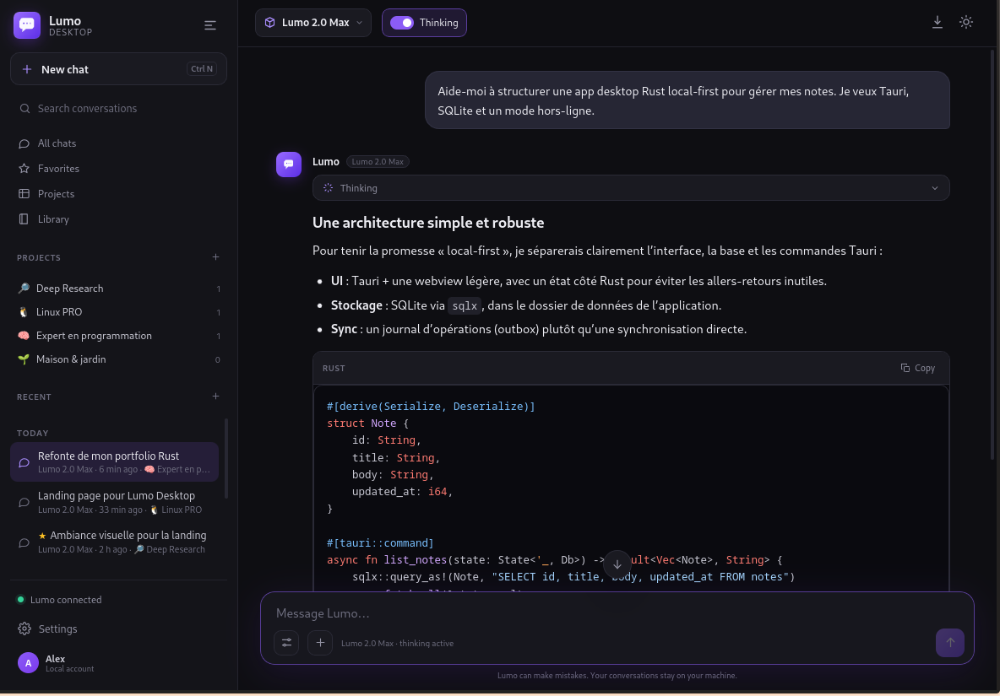
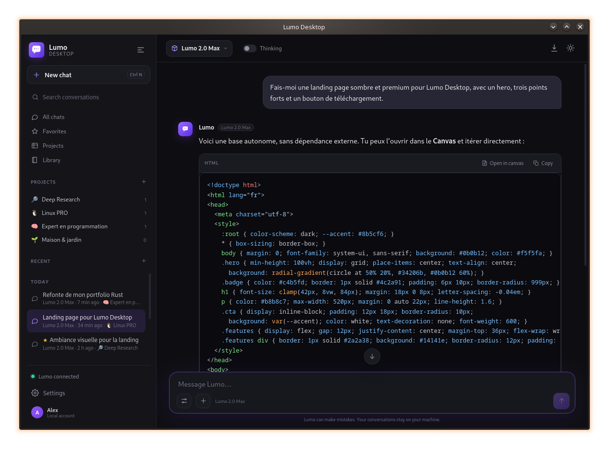
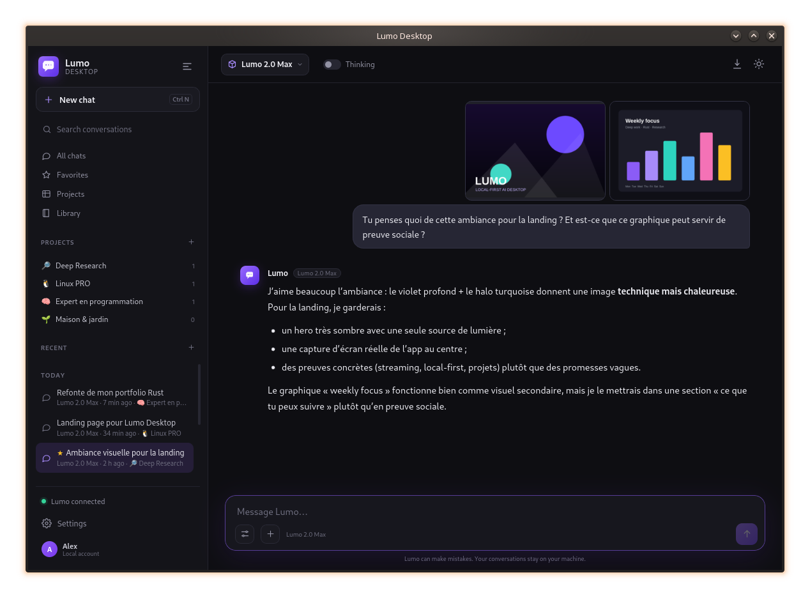
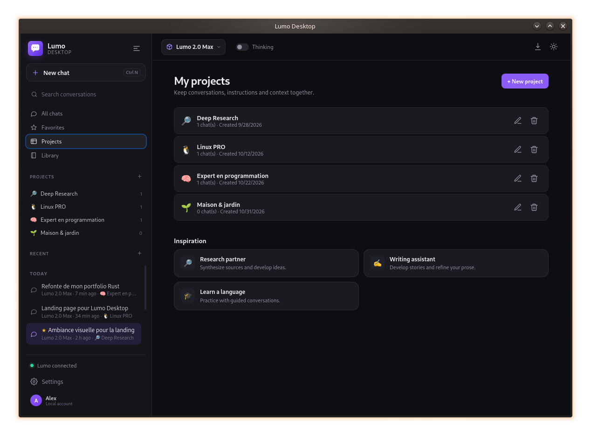
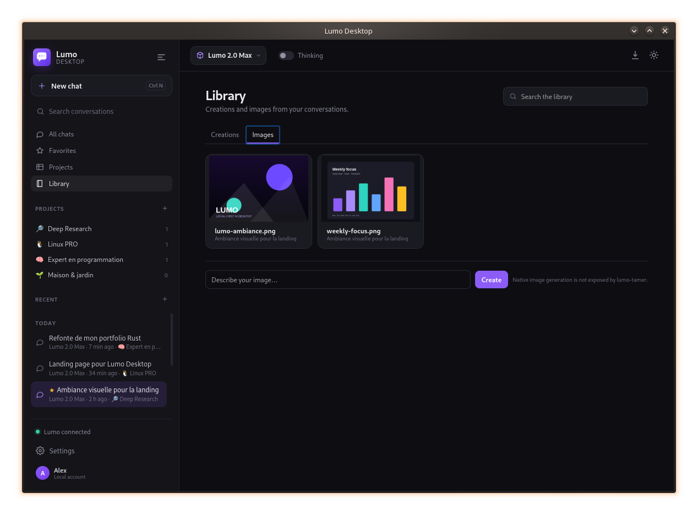
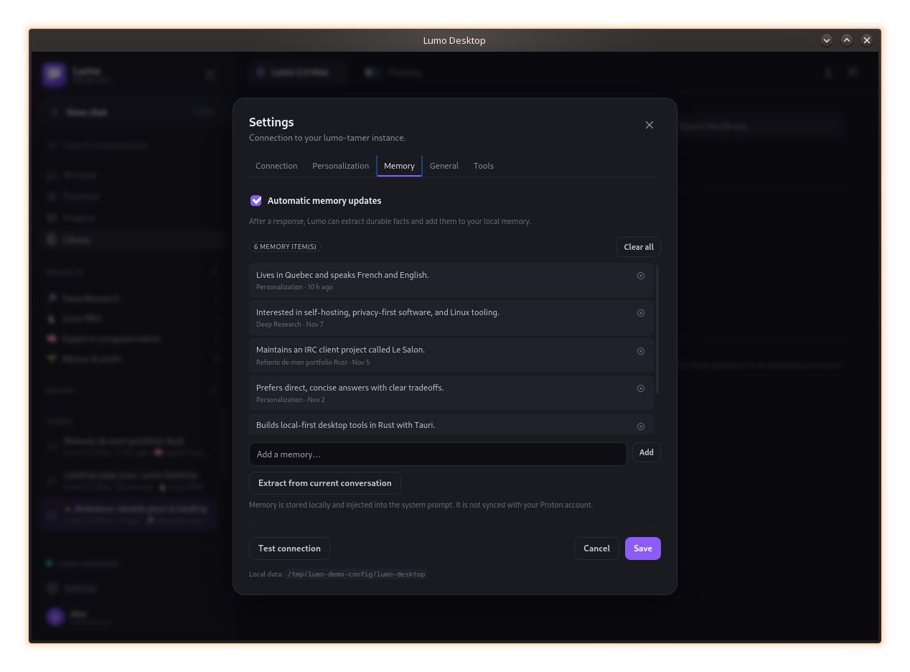
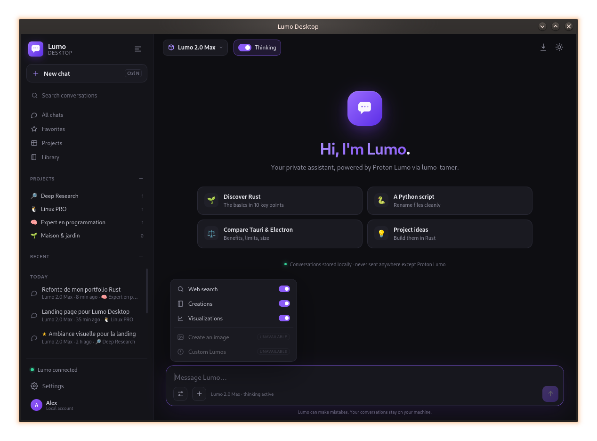

Streaming & reasoning
Token-by-token replies, extended thinking, Markdown and highlighted code. Stop a generation at any time.
The local-first desktop client for Proton Lumo: streaming, projects, memory, attachments and tools — in a fast, private Rust app.

A fast, discreet native app. Your conversations stay local; Proton Lumo does the thinking.
Token-by-token replies, extended thinking, Markdown and highlighted code. Stop a generation at any time.
Conversations, projects, favorites and search live in local JSON files. No account needed for the client itself.
Drop text, code, PDF, DOCX/ODT or images. Text is extracted locally and images are OCR'd before being sent to Lumo.
Read, write, search and shell tools with a workspace sandbox and confirmation prompts. You stay in control.
Tell Lumo who you are, what you do and how to behave. Durable memories can be extracted automatically and stay local.
HTML and SVG creations open in a sandboxed canvas. The library keeps your best artifacts and images one click away.
Close to tray, reopen instantly, start a new chat or quit. The app stays out of your way until you need it.
The interface follows your system locale, with a manual override in Settings. Dates and labels follow the active language.
Enable lumo-tamer's native web search with one switch. Ask for current weather, news or facts and get live answers.
Actual screenshots from the app, with a demo profile and sample conversations.






The desktop client talks to your local lumo-tamer instance. lumo-tamer handles Proton authentication and the API. No additional server sits in between.
Lumo Desktop is a local client, not a hosted service.
Conversations, projects, memories and settings live in ~/.config/lumo-desktop. No cloud account for the client.
PDF text, Office documents and image OCR are extracted on your machine. Only the resulting text is sent to Lumo.
No analytics, no tracking, no account required to run the desktop app. The source code is open.
AppImage or .deb, Linux x86_64. Releases contain both formats.
# Make the AppImage executable, then run it
chmod +x Lumo-Desktop_0.1.0_amd64.AppImage
./Lumo-Desktop_0.1.0_amd64.AppImageThe AppImage uses the system WebKitGTK 4.1. For PDF/OCR attachments, install poppler-utils, tesseract and unzip.
No. It is an independent project, not affiliated with Proton. It uses lumo-tamer and Lumo's unofficial API.
In ~/.config/lumo-desktop. Conversations, projects, memories and settings stay local.
For the one-click installer, yes: Docker, Compose and git. The assistant installs lumo-tamer, opens the Proton login browser and configures the client.
Yes. Set the lumo-tamer directory and API key in Settings → Connection. The app auto-detects the provider from OpenCode when available.
Not the raw images. The client extracts text with local OCR and sends that text. lumo-tamer does not transport native attachments yet.
MIT. The code is open source and contributions are welcome.
Download the AppImage, launch it, and connect your Proton account with the built-in assistant.